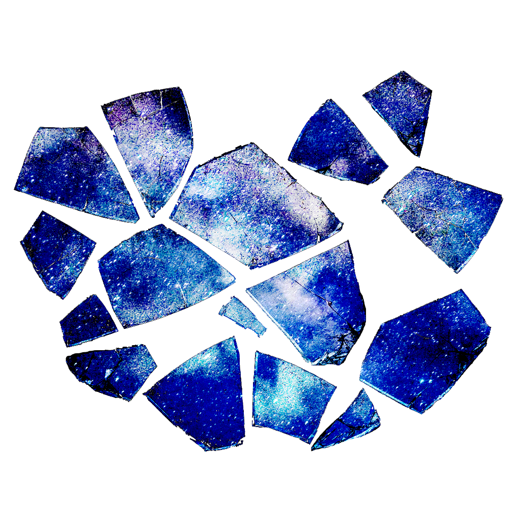

As the being slowly reached lucidity,it had felt its body slowly recover from the sudden impact it had felt just a minute prior as a bundle of sharp energy coalesced around it, several feet off of the ground.
The being had yet to regain visual acuity, and had to rely on its sense of hearing, which had been recovered first.
Rather than any human activity, the being had failed to sense a modicum of it, as he failed to hear any footsteps, forms of discussion, or even breathing, save for its own. He was further drawn towards the conclusion that he was in a less maintained and more isolated part of whatever town, city or establishment he had suddenly found itself in.
Since its fall, the pain of which had been gracefully softened by the warm embrace of a decrepit trash bag, which now that he had regained its sense of smell, reeked of waste and the corpses of vermin. A pleasant introduction to the place that the being would reside in for the foreseeable future.
Forcing himself to lean forward into a crawling position, the being tried to listen more closely to get a better sense of where he was, and besides the scurrying of rats across the rough asphalt flooring, their world itself seemed to be moving with a sense of urgency in response to an occurrence of magnificent proportions,, as he had begun to hear blaring sounds approach and quickly pass by its location, and the screams of bystanders as they ran in the opposite direction.
Propagating itself against the closest brick wall, it looked down to get a better sense of its appearance.
Its body was vaguely masculine, around similar in height to most of the people he saw urgently pass by the opening of the alleyway, indicating that he was about average.
Across from him, the being saw a circular wooden frame, and before it lay several shards holding the night sky, and as the being slowly approached to understand how the night could reside within such a small and fragile shard, he was greeted by his own expressionless face.
